Fast and Smooth Trajectory Generation for Robot Manipulators
Near-optimal trajectory planning for pick-and-place tasks using real and simulated experiments. Includes point cloud perception, collision checking, and UR5e execution. (Journal paper in progress)
Experiment image and point cloud view with generated trajectory
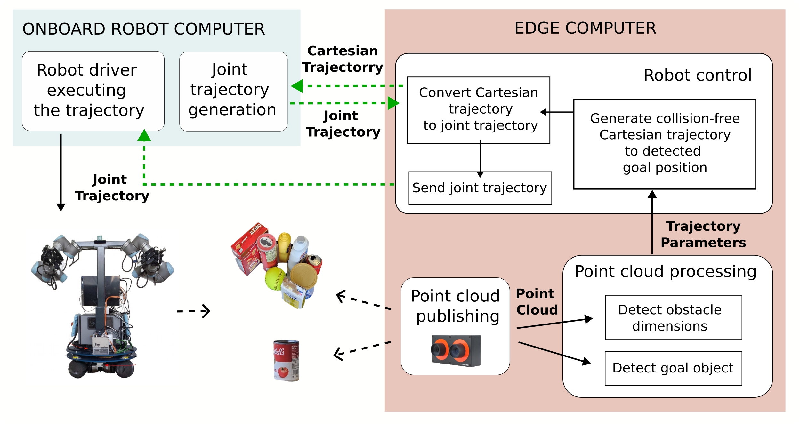
Distributed control architecture
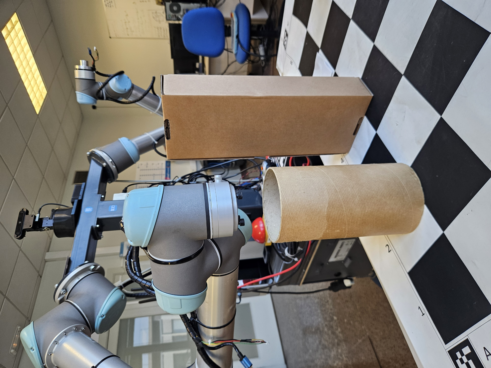
Another experiment configuration with......corresponding point cloud view and generated trajectory
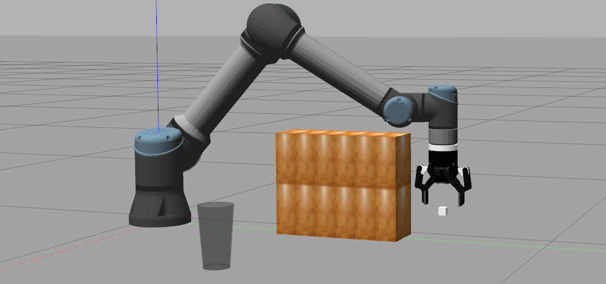
5G router on the mobile robot
5G Edge Computing with Real Robot Experiments
Robot control over 5G networks with edge computation for latency-sensitive manipulation. Tasks include push-based and teleoperation interaction. (Journal paper, includes video submission)
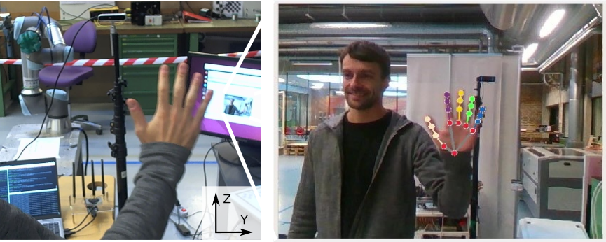
Teleoperation experiment: Robot mirroring the hand motion with delay. Hand detection is performed on the edge computer.
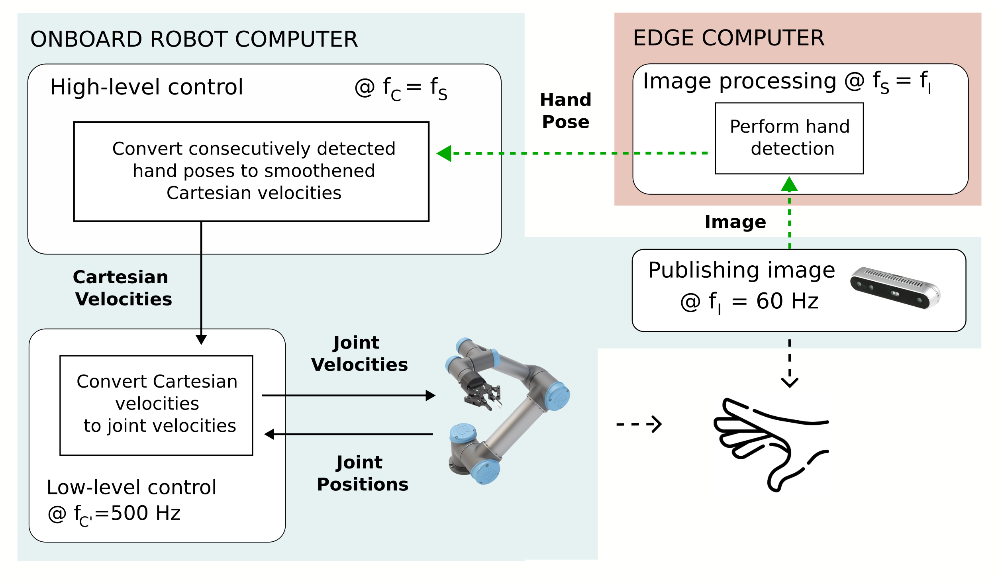
Distributed control architecture of the teleoperation experiment
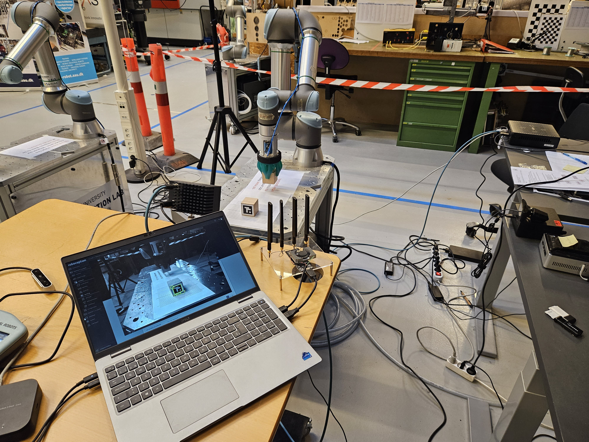
Push experiment snapshot with industrial camera and edge computer.
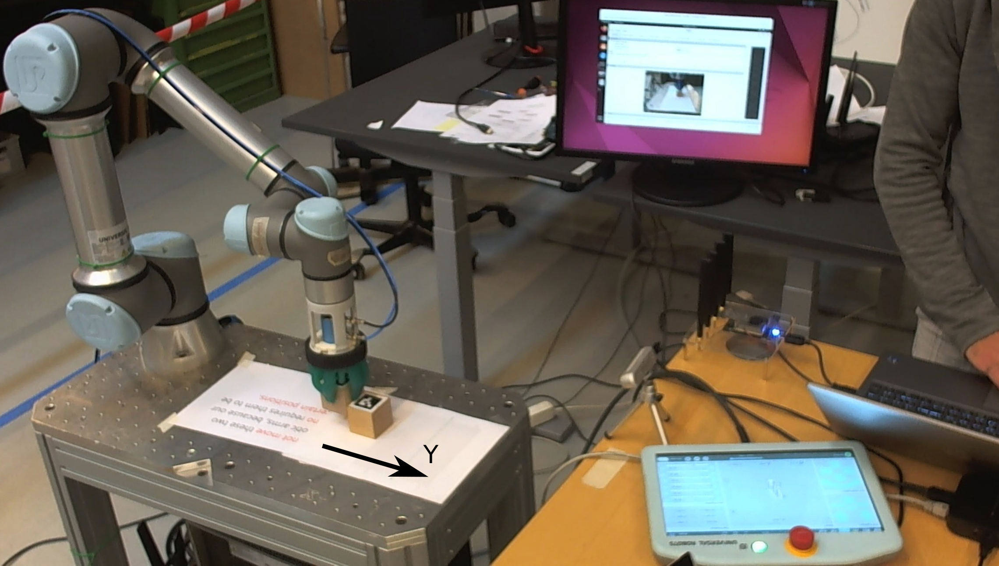
Push experiment snapshot with consumer camera and local edge server
Task & Motion Planning for Long-Horizon Tasks
Simulation-based experiments using symbolic task planning and motion primitives, monitored via a custom MATLAB dashboard. (Conference paper, includes video submission)
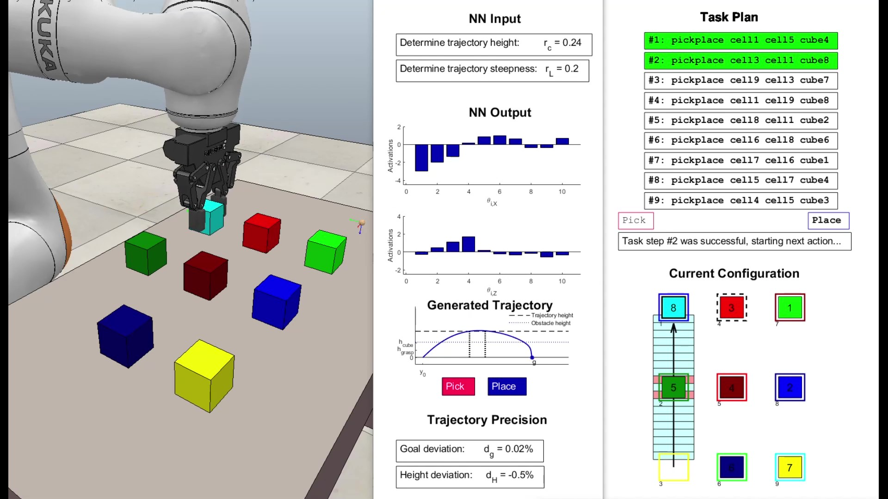
Custom task planning dashboard
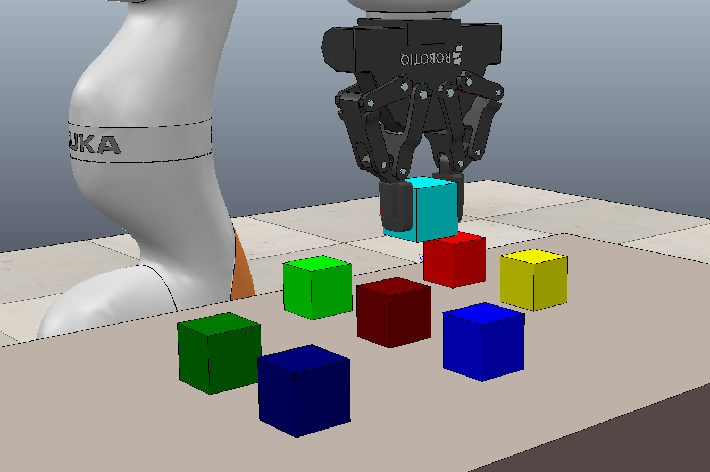
Execution of motion primitives in simulation
Depth Estimation with High Dynamic Range Imaging
Depth prediction from a custom-built stereo camera leveraging HDR capture for robust results in extreme lighting conditions.
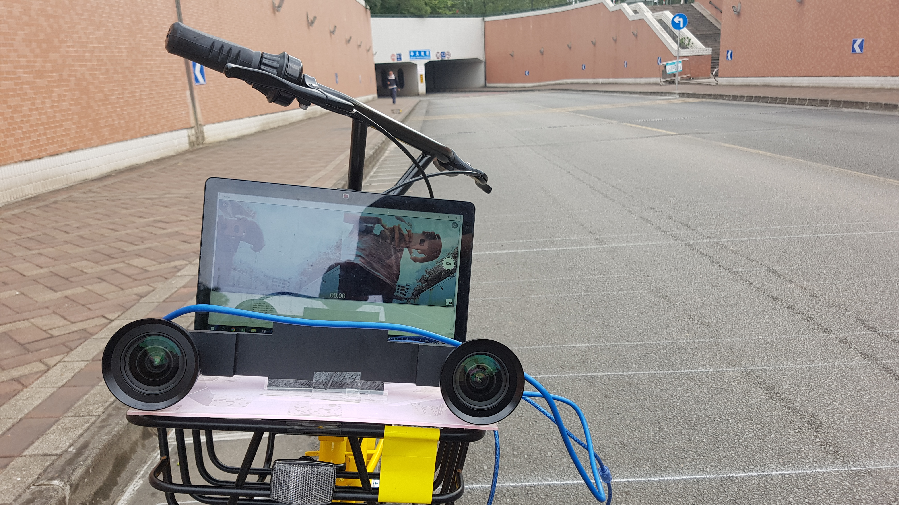
Custom stereo setup for HDR imaging
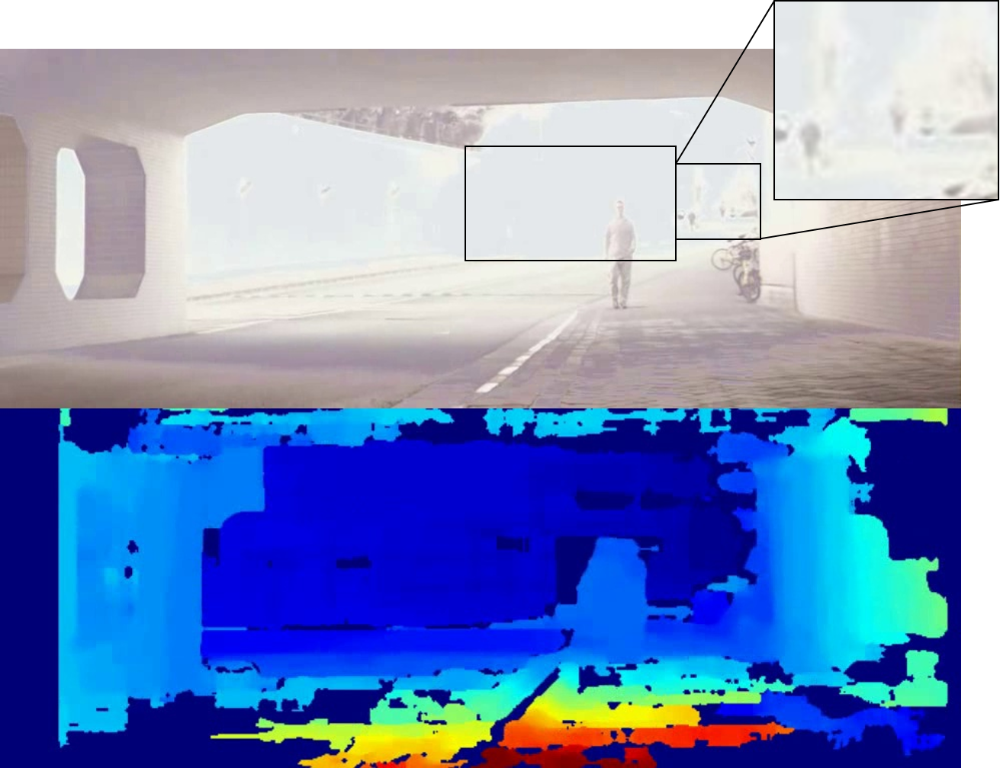
Depth map generated from HDR stereo images